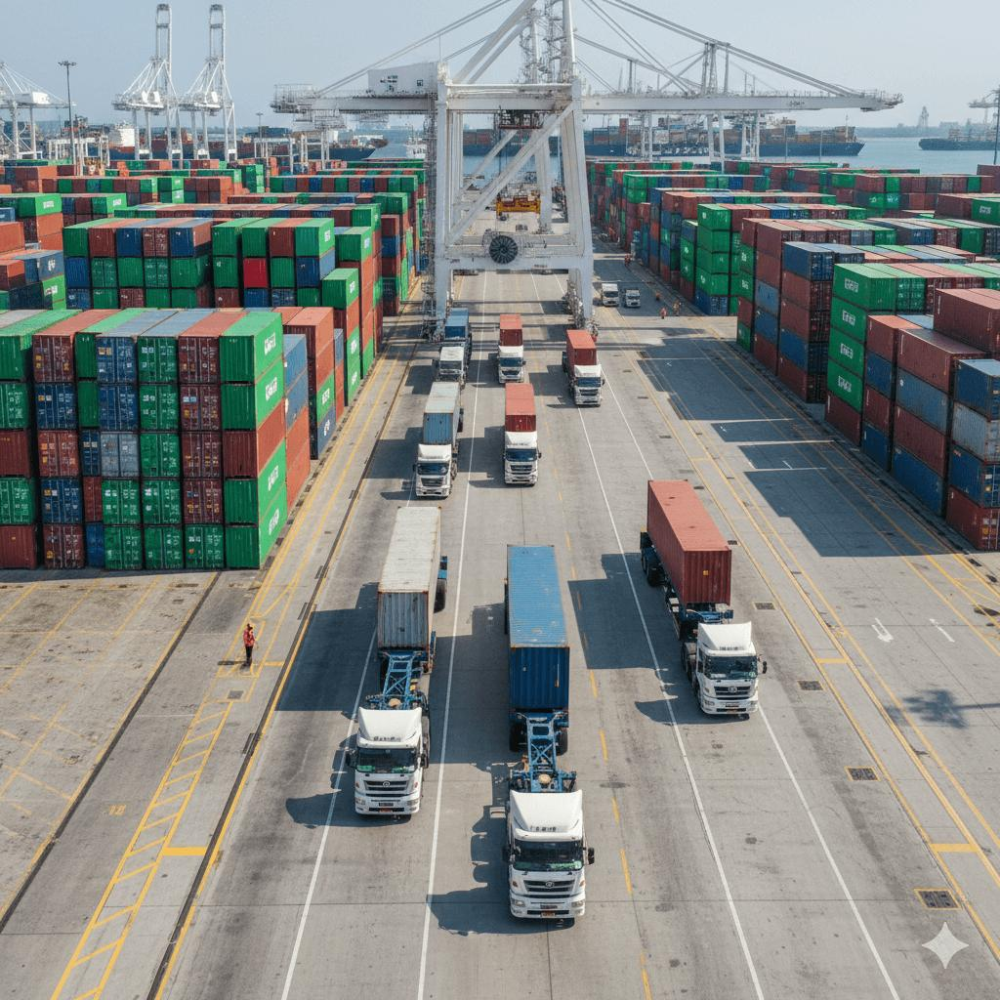
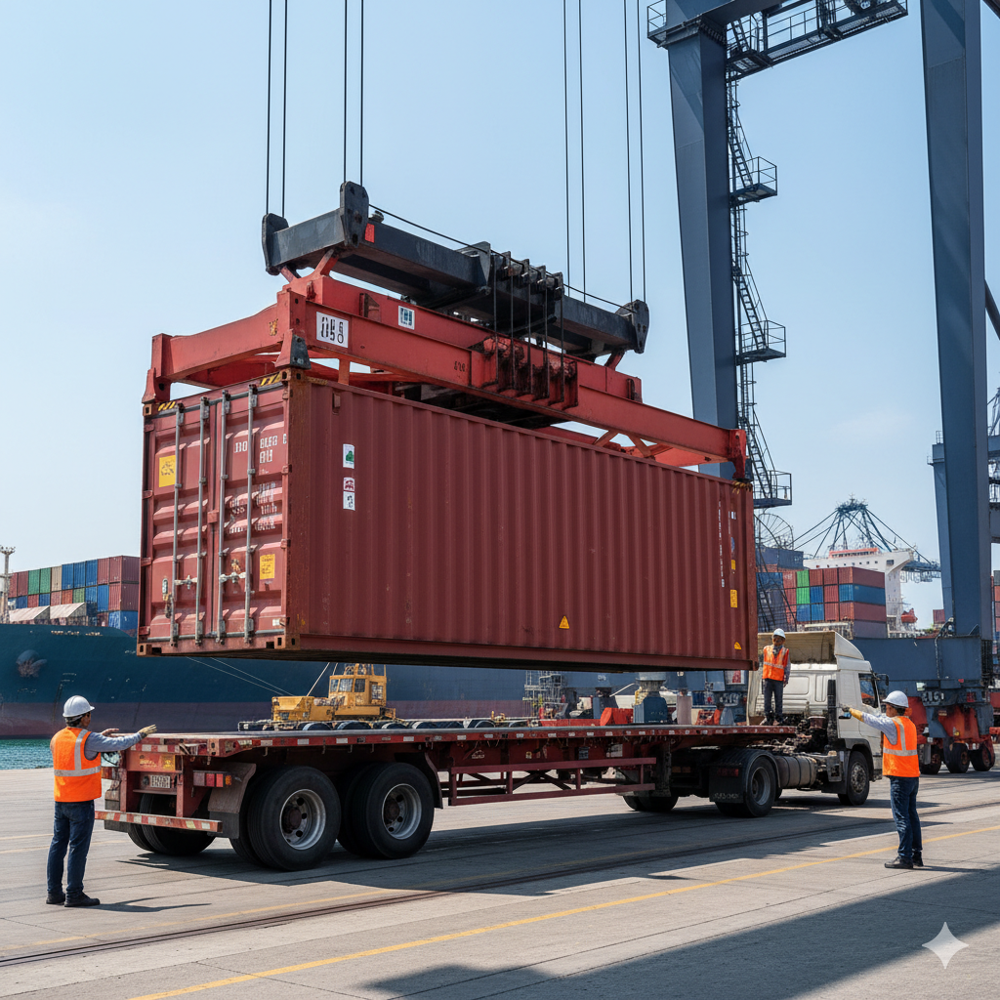

FTL
Full Truckload
Cost-efficient shared transportation for smaller shipments, optimized through consolidation and structured routing.
More infoFreight Services
HHT Freight Group delivers structured logistics solutions across the United States, supporting consistent freight movement, operational control, and scalable transportation planning for businesses of all sizes.
Cost-efficient shared transportation for smaller shipments, optimized through consolidation and structured routing.
More info
Cost-efficient shared transportation for smaller shipments, optimized through consolidation and structured routing.
More info
Short-distance container movement connecting ports, rail yards, and inland facilities with precise coordination.
More info
End-to-end coordination from port arrival to inland delivery, ensuring smooth container flow across transport stages.
More infoService Execution Model
Analyze shipment requirements including route, volume, equipment, and delivery timelines.
Select the most suitable transport solution based on load type and operational requirements.
Manage dispatch, carrier communication, and movement tracking through a centralized workflow.
Ensure timely delivery with structured updates and complete shipment visibility.
Use this section to show large-volume, direct-route freight capability. It works well for high-priority shipments and helps visitors understand when a dedicated truck is the right option.
For dedicated moves, we plan the entire lane around your timing and equipment needs—so dispatch can execute with fewer surprises from pickup through delivery.
This area explains shared-capacity freight clearly. It is useful for customers who ship smaller volumes but still want dependable nationwide movement.
With LTL, we coordinate consolidation and dispatch so partial shipments still move confidently toward your delivery target.
This section gives room to explain short-haul but critical container movements. It is a good place to show operational control around ports and inland transfer points.
Drayage success depends on tight timing at terminals and transfer nodes—so we focus planning on the handoff moments that matter most.


This content block is useful for showing that HHT can manage connected container movement, not just one leg of the shipment. It adds a more complete logistics story to the site.
For port-to-port shipments, we connect the full journey—so your shipment plan stays consistent from port arrival to final delivery stages.
HHT Freight Group structures its service offering to provide clarity in transport selection, operational execution, and shipment management across different freight types.
Each service is designed to support specific logistics requirements, enabling businesses to choose the most efficient and reliable transport solution for their operations.
Providing complete and accurate shipment information allows for better service selection, optimized routing, and reliable freight execution across all stages of transportation.